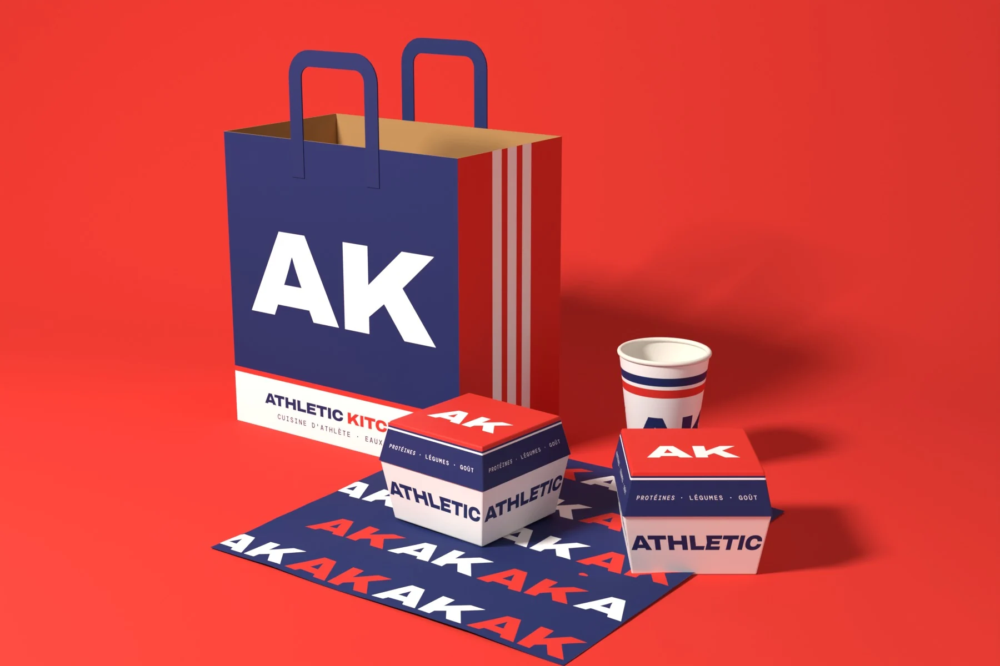
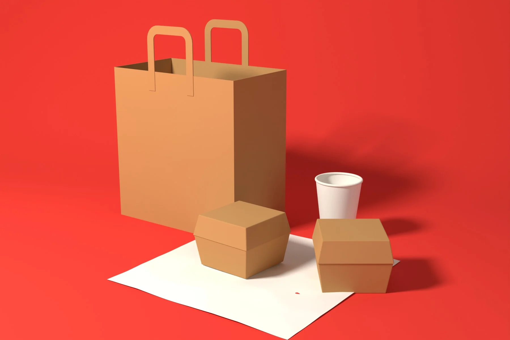
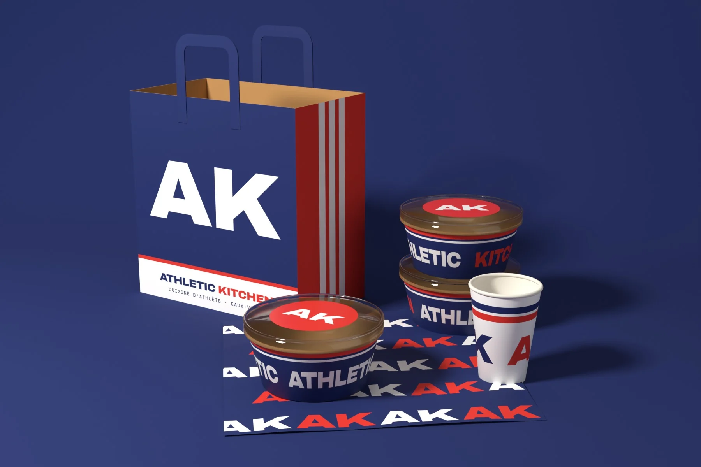

Sac, bols, gobelet, box et papier aux couleurs d'Athletic Kitchen. Chaque commande à emporter fait votre pub dans la rue, au bureau et jusqu'à la salle de sport.

Faites glisser le curseur : à gauche les emballages kraft neutres d'aujourd'hui, à droite les mêmes aux couleurs d'Athletic Kitchen.

Avant · neutreAprès · Athletic
Grand monogramme AK devant, bandes sport sur les côtés. Celui qu'on voit le plus dehors.
Pour les bowls et les plats protéinés. Le couvercle est scellé par un sticker AK.
Smoothies, cafés, boissons protéinées. Bandes marine et rouge, AK des deux côtés.
Wraps, burgers healthy, desserts. « Protéines · Légumes · Goût » sur le bandeau.
Motif AK répété. Il habille le plateau et la photo Instagram.
Sur vos emballages neutres actuels. Rapide, sans attendre l'usine : idéal pour démarrer tout de suite.
Votre logo imprimé directement sur le sac, le gobelet et les bols.
L'univers entier, comme sur cette page : couleurs pleines, monogramme, bandes, papier assorti.
Visuels 3D de maquette réalisés par Nouvelle Ardoise. Le monogramme AK est une proposition. Quantités minimales et délais confirmés avec le fournisseur avant toute commande.